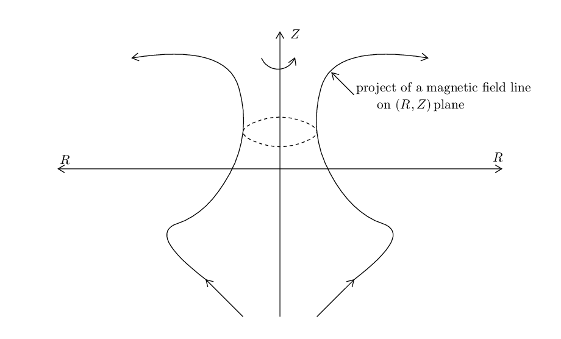

For axial symmetry system, magnetic surfaces can be defined in a trivial way. The axial symmetry of tokamak magnetic field allows us to introduce a surface of revolution that is generated by rotating the projection of a magnetic field line on (R,Z) plane around the axis of symmetry, Z axis. The unique property of this revolution surface is that no field line point-intersects it and a field line with one point on it will have the whole field line on it. This revolution surface is called a magnetic surface. For instance, consider an arbitrary magnetic field line, whose projection on the poloidal plane is shown in Fig. 1. A magnetic surface is generated by rotating the projection line around the Z axis.

The value of Ψ is constant on a magnetic surface (since Ψ is constant along a magnetic field line and Ψ is independent of ϕ). On the other hand, the value of Ψ is usually different on different magnetic surfaces. The above two facts enable Ψ to be used as labels of magnetic surfaces.